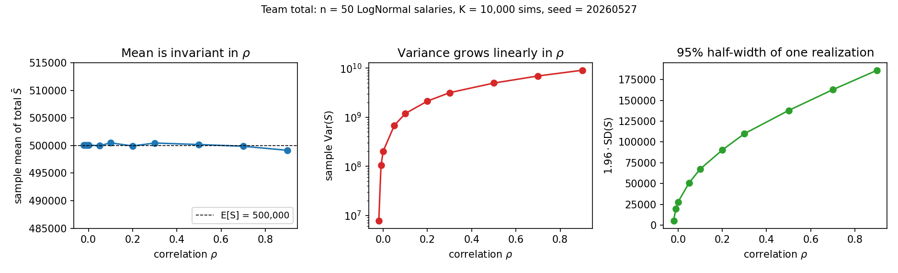

The Most Useful Theorem in Probability Has No Independence Hypothesis
What this is. The one everyday result in probability that needs no independence hypothesis — and why that makes the mean of a budget trustworthy while its risk band stays fragile. You should be comfortable with expectation, variance, and correlation. By the end you will know which half of a forecast survives correlated inputs, and which half does not. Figure and numbers reproduce from the companion repository.
Most budget forecasts fail for the wrong reason: the expected total is right, the uncertainty around it is not. The cause is one of the cleanest results in probability — used every day under a hypothesis it does not need. Independence shows up by page 30 of every textbook and never leaves: the CLT needs it, the Law of Large Numbers needs it, the variance of a sum needs it. Exactly one everyday result breaks the pattern.
Linearity of expectation says: for any random variables $X_1, \ldots, X_n$ on a common probability space $(\Omega, \mathcal{F}, P)$ with finite expectation,
$$ E\left[\sum_{i=1}^n X_i\right] = \sum_{i=1}^n E[X_i]. $$
No independence. No common distribution. No constraint on the joint law beyond integrability.
Expectation is the Lebesgue integral $E[X] = \int_\Omega X \, dP$ — a continuous linear functional on $L^1(\Omega, \mathcal{F}, P)$. Linearity of expectation is the linearity of that functional. The joint law never enters the integral of a sum. By contrast, $E[XY] = E[X] \cdot E[Y]$ requires the joint to factor; multiplication is not linear. Correlation does not affect the first moment; it enters only at second order.
A 50-person team
Each monthly salary $S_i$ is LogNormal (strictly positive, right-skewed) with $E[S_i] = \text{R\$ }10{,}000$ and CV 20%. Compensation bands induce latent-factor dependence — market adjustments and headcount reshuffles move salaries together — so a pairwise correlation $\rho \approx 0.2$ is a defensible central estimate.
First moment. Linearity gives the total immediately:
$$ E\left[\sum_{i=1}^{50} S_i\right] = 50 \cdot 10{,}000 = \text{R\$ }500{,}000. $$
The correlation does not appear.
Second-order structure. The variance of the sum is a quadratic form. With $\Sigma$ the $50 \times 50$ covariance matrix,
$$ \text{Var}(\mathbf{1}^\top \mathbf{S}) = \mathbf{1}^\top \Sigma \mathbf{1} = \sum_{i, j} \Sigma_{ij}. $$
Every off-diagonal entry contributes. Under equicorrelation this collapses to $50 \sigma^2 (1 + 49\rho)$ — at $\rho = 0.2$, about $10.8\times$ the independent variance, and a 95% band $\sim 3.3\times$ wider.

Takeaway
Two rules to keep separate:
- First moment of a sum: ignore correlation. Marginals fix the answer.
- Variance, 95% band, tail risk: correlation is the whole game.
The failure mode I see most often is treating the second with tools that worked for the first. Result: budgets whose central estimates are right and whose risk bands are off by a factor of three. The quarter when everything correlates at once is the quarter that destroys the margin of safety.
The figure and every number above are reproduced by versioned scripts with fixed seeds in the companion repository.